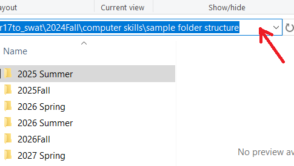
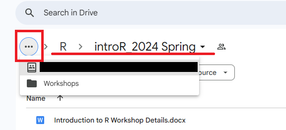
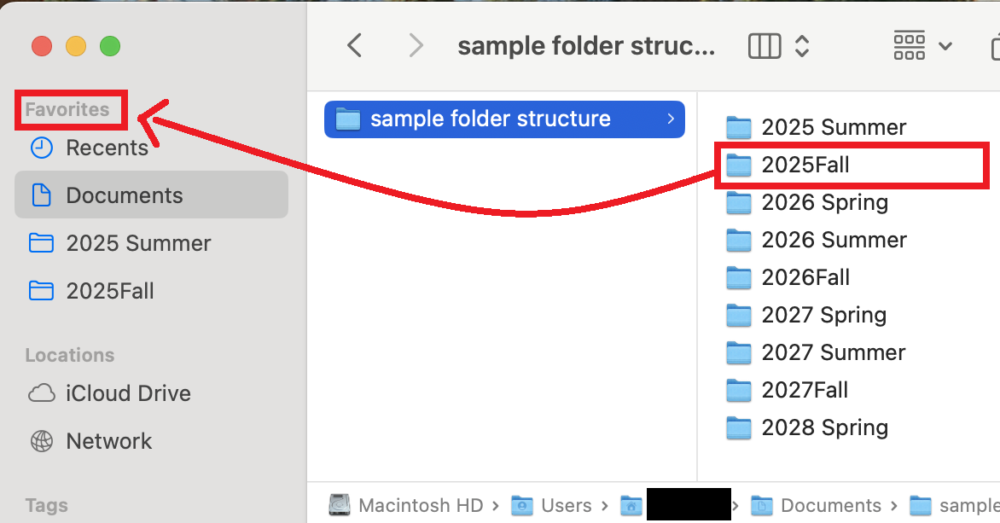

4 File Management
4.1 Theory
File management on a computer refers to the processes and techniques used to organize, store, retrieve, and manage digital files. Ideally, this is done using a structured system that facilitates retrieval, because we all inevitably forget where something is.
The developers of modern computers have gradually added barriers to creating useful file structures on a computer. Yet file management is critical to:
- consistently retrieve files,
- organize ideas,
- store and organize multiple documents associated with a single project,
- create a unique internal address that pinpoints the location of a file or folder,
- effectively code, and
- manage complex research projects.
File management is almost entirely inaccessible on most tablets and smartphones. It is readily possible on a computer but requires a few additional clicks and environment adjustments. As such, this section is designed for a Mac or PC computer, not a tablet. Similar principles apply to a Chromebook but they are not demonstrated here.
File tags provide additional organization. They should be used as secondary file organization tools and not primary organization tools like a file structure. The file structure creates a unique internal address for a file that is quite useful for advanced computing.
Practice these skills while reading the tutorial, during everyday computing work, and in the practice tasks at the end of this section.
Path bars
A path bar is a navigational tool in file management applications that helps you keep track of where you are in a file system. It displays your current visible folder and the folders it is nested within. It allows you to copy the address of your file in text form. It also lets you navigate up your folder tree by clicking on higher level folders in the path bar. It is useful in many contexts, and critical for coding projects. Alternate methods exist for each of these tasks, but the path bar accomplishes all of them and is similar on Macs and PCs.
Mac
The path bar on a Mac is hidden by default, but can be displayed by clicking View > Show Path Bar in the Finder menu options. The path will appear at the bottom of the screen. The path can be copied by right clicking on the path and selecting “Copy path”.

PC
The path bar is always visible in Window’s File Explorer. To access the text version of the path, click into the blank white space next to the path bar.

Google Drive’s path, of a sort
Google Drive also has a folder structure, but it is not nearly as useful or accessible as Mac’s Finder or Window’s File Explorer. It is difficult to copy the path address (as of Summer 2025). That said, the path does appear at the top of your Google Drive screen. You may need to click three little dots to the left of the path to access the full path information.

File structure
A file structure is how you organize and store your files and folders for easy access and management of files.
The Documents folder
On a Mac and PC, you should default to creating a file structure in the “Documents” folder. This is the location intended for permanent file storage for most users. Instructions for alternatives, such as setting up a synced Google Drive, can be found on Google.
Note that your Downloads folder is intended for temporary storage. Many of the files you download, such as installers, are intended to be temporary files. Yet they can take up a lot of space. As such, good computer hygiene involves moving needed files out of your Downloads folder and then deleting the contents of your Downloads folder on a regular basis. This makes your Downloads folder uniquely unsuitable for permanent storage.
Clean out the Downloads folder
If you store your files in your Downloads folder, you do not have to fix it all at once. Instead, create a plausible file structure in your Documents folder, as described below. Move all contents of your Downloads folder to a folder named “Downloads (insert date)” inside your Documents folder. For all future downloads of potentially permanent files, save them in your Documents folder in a reasonable location. Over time, you can remove things from the copied Downloads folder titled “Downloads (insert date)” that now lives in your Documents folder. Delete unneeded files. Move others to reasonable locations in your Documents folder. Remove temptation to use your Downloads folder as permanent storage by regularly deleting all the files that end up there. The files in the downloads folder should all be temporary anyways.
Folder system organization principles
- Human brains track time-based categories well. When topics are nicely confined inside a time frame, contain them in folders devoted to a year, season, or semester.
- Human brains also track project-based categories well. You can organize folders devoted to particular parts of projects.
- Leverage the alpha-numeric ordering required by the Finder (Mac)/File Explorer (PC) programs.
- Start file and folder names with the year when applicable. Add the month and/or day after the year.
- Use spaces and punctuation strategically. “2026 Summer” is before “2026Fall”, because a space “ ” comes before “F” in the alpha-numeric order.
- Start commonly used files and folders with the beginning of the alphabet. Even putting “1” or “aa” at the beginning of a file or folder can be effective, albeit inelegant.
- Human brains track time-based categories well. When topics are nicely confined inside a time period, you can contain them in folders devoted to a year, season, semester, or quarter.
- Balance the depth of your folders (how many folders are nested within each other) and the breadth of your folders (how many folders are within one single folder). Too deep, and you will spend too much time clicking into folders. Too broad, and you will have a hard time finding the folder you want. One suggestion is to keep your regularly/recently used files broad. Bucket older/less used files into a few folders.
- Google “computer file structure principles” to find more information about file structure systems.
Example folder system
The following is an example of a folder system that has been used successfully by many students and faculty. You can download this example at this link: sample folder structure. Change the years to fit your situation. Adjust semester to quarters or any other subdivision as needed. Select the folder and press “F2” on a PC and “Enter” on a Mac to rename the folder.
Quick access/Favorites
Drag and drop regularly used folders into your “Quick Access” (PC) or “Favorites” (Mac) panel on the left side of your Finder (Mac)/File Explorer (PC).

Window management
Window management refers to how the user places program windows on their screen. For example, a user might have two windows side-by-side on their screen. Or, if they are using a small laptop screen, they might only look at one window at a time.
Looking at one window at a time and then swiping between windows or using keyboard shortcuts to navigate between windows can be useful for consuming information. For managing information, it can be helpful to show the original location at the same time as a location with new organization.
For files and folders, this means displaying a file’s origin window at the same time as you see the destination window. When you have both windows up, you can more efficiently move and organize files and folders than when you have to search and find windows before dragging and dropping files. For example, with the window configuration below, I can rapidly drag and drop the “Computer Skills” folder into my “all workshops” folder.

Saving files in Microsoft Office
Microsoft Office hides the file structure by default when you save a document to simplify the interface. When you save a document (Save or Save As), the first screen tries to guess where you want to save it. If you have a clear file structure, its guess should only be accurate if you were working in the same location repetitively. This section shows how to access your file structure via the Browse button (PC) or a downward facing button (Mac).
To change the setting permanently, Google “customize the save experience in office”.
Your screen may look slightly different than what is shown here. If it is too different to interpret, Google “Browse file structure from save word” to find a guide suited to your computer’s environment.
PC
On a PC, click “Browse” from the “Save” or “Save As” screen. In the resulting File Explorer window, browse to the appropriate folder and click “Save”.
Mac
On a Mac, click the downward facing arrow next to “Where” from the “Save” or “Save As” screen. In the resulting Finder window, browse to the appropriate folder and click “Save”.
4.2 Practice
Tasks:
- If you are on a Mac, set up your Finder window so that the path bar is visible at the bottom of the window. If you are on a PC, skip this step.
- Set up and/or clean up your file structure. This could take a substantial amount of time. I recommend spending 10 minutes now to set up the general organization structure. Then schedule an hour in the next week to make progress on your organization. If you store files in your Downloads folder, pay particular attention to the section on cleaning out the Downloads folder.
- Open a Finder (Mac)/File Explorer (PC) window. Arrange it so you can see these instructions and your Finder (Mac)/File Explorer (PC) window at the same time.
- Copy the path of one folder. You do not need to do anything with it, just know that you can copy it.
- Open a new window with Cmd+n (Mac)/Ctrl+n (PC). Open a different folder in one of the windows.
- Create a new folder (in either window) using Cmd+shift+n (Mac)/Ctrl+shift+n (PC).
- Rename that folder.
- Move the folder to your second window by dragging and dropping it.
- Cmd+z (Mac) or Ctrl+z (PC) to undo the move.
The following video shows an example of tasks 5-8.
4.3 Assessment
Visit the assessment for file management skills or download a local copy of the assessment.